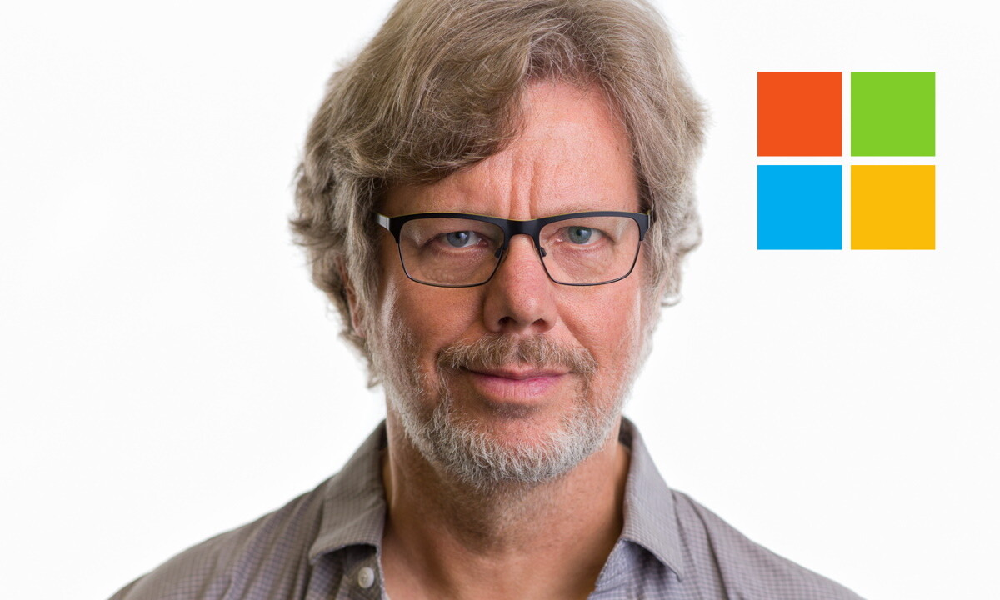

Creadores
¿Quién creó Python y por qué?
Historia breve
Creador: Guido van Rossum, un programador neerlandés.
Año de inicio: 1989, durante sus vacaciones de Navidad.
Primer lanzamiento público: 1991 (Python 0.9.0).
Guido trabajaba en el Centrum Wiskunde & Informatica (CWI) en los Países Bajos, donde participaba en el desarrollo de un lenguaje educativo llamado ABC. Aunque ABC tenía ideas geniales, tenía limitaciones importantes.
Entonces, Guido van Rossum pensó:
"Voy a diseñar un lenguaje mejor, más flexible, que conserve las buenas ideas de ABC pero sin sus errores."
Decidió llamarlo Python en homenaje a su grupo de comedia favorito: Monty Python’s Flying Circus.
Objetivos originales de Guido:
Crear un lenguaje que fuera fácil de aprender y usar para principiantes.
Mantenerlo lo suficientemente potente para programadores profesionales.
Favorecer la productividad: menos código, menos errores.
Soportar múltiples paradigmas de programación.
